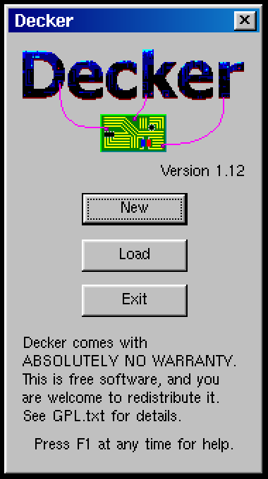
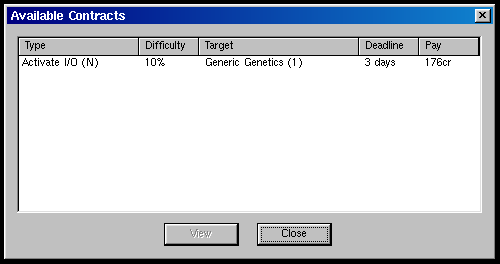
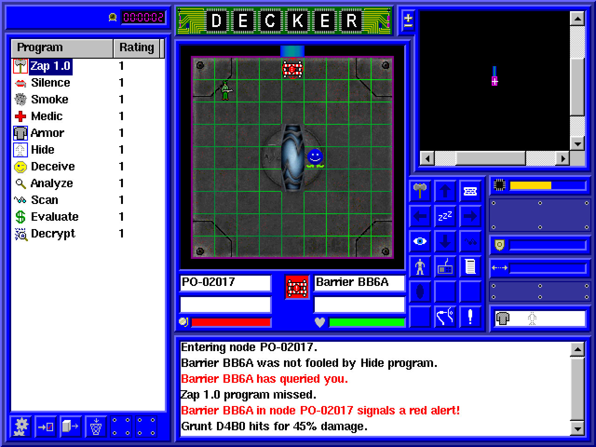
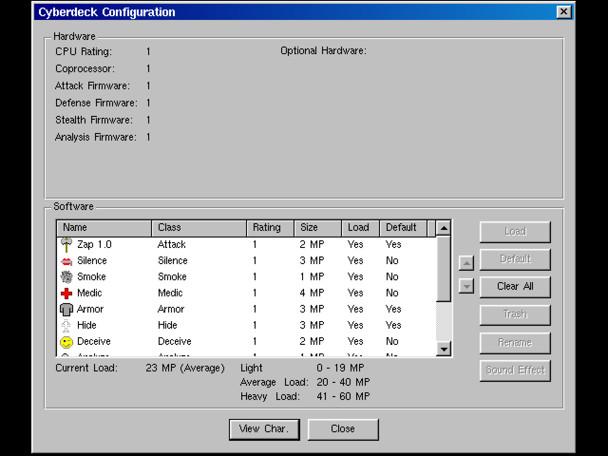

jack in, grab the file, get out before the red alert
> Enter the dungeonDecker is not descended from Rogue. It borrows the decker of the Shadowrun tabletop game: a hacker who plugs a cyberdeck into the Matrix and fights ICE to steal data. The randomly built systems, permanent death (Ironman mode) and turn-based node crawling make it a roguelike cousin. See the family tree.
Played here: Decker 1.12, ported to SDL2 and WebAssembly with a small MFC shim.
| Shawn Overcash | Design, code, graphics (2001–2004) |
| Players | User-submitted graphics, shipped in the source |




UserSubmittedGraphics folder of player art. (SourceForge)| Thing | Count | Notable ones |
|---|---|---|
| Programs | 26 | Attack types, Slow, Weaken, Confuse, Virus, Medic, Armor, Hide, Deceive, Smoke, Relocate, Analyze, Scan, Evaluate, Decrypt, Reflect … |
| ICE types | 6 | Gateway, Probe, Guardian, Tapeworm, Attack and Trace ICE. |
| Node types | 8 | CPU, SPU, Coprocessor, Datastore, I/O controller, Junction, Portal in and out. |
| Hardware | 9 | Chip Burner, Surge Suppressor, Neural Damper, Trace Monitor, Bio Monitor, High-Bandwidth Bus, Mapper, Design Assistant, Proxy. |
| Skills | 6 | Attack, Defense, Stealth, Analysis, Programming, Chip Design. |
| Corporations | ~100 | Joke names, from bait shops to Black Mesa. |
The original Windows help file, converted: read it here. Press F1 in the game for the same help.
No walkthrough exists; systems are random. The help file explains every program and ICE. Tips:
No cheat or debug mode was found in the source.